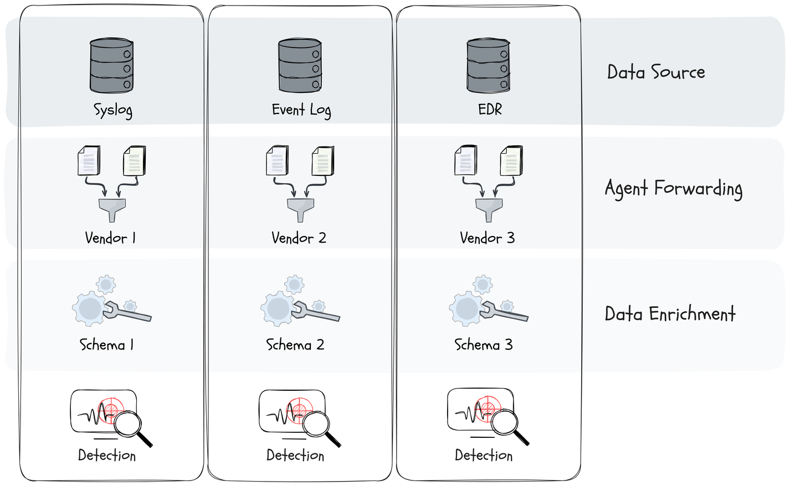
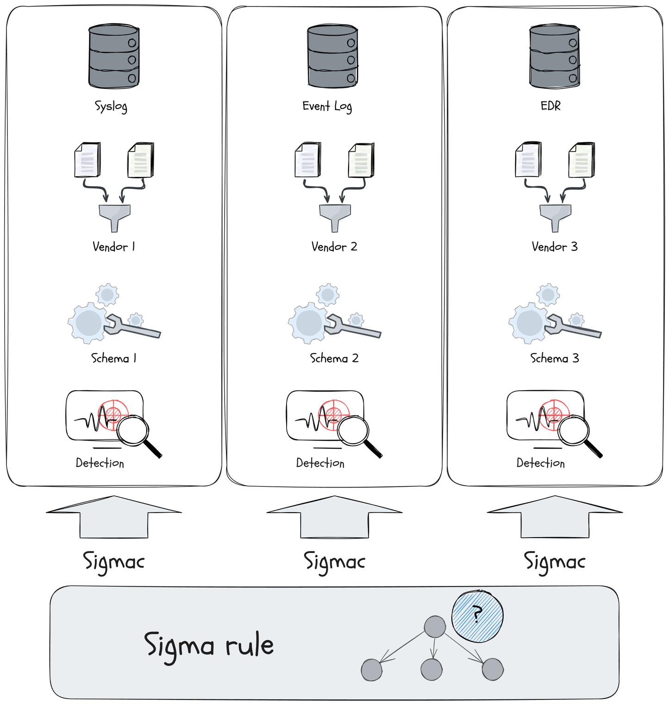
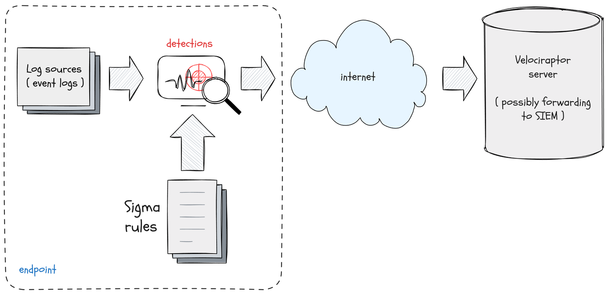
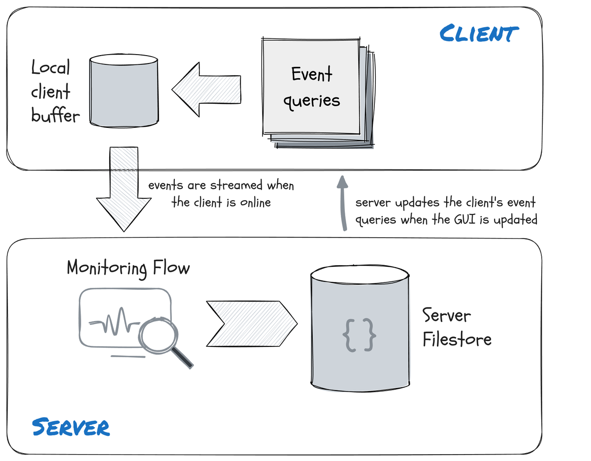

<!-- .slide: class="title" --> <h1 style="font-size: 4ex">Detection Engineering</h1> <div class="inset"> ## Advances in Detection Engineering ### Mike Cohen, Digital Paleontologist, Rapid7 </div> --- <!-- .slide: class="content" --> ## What is Detection Engineering? * The science and art of writing, maintaining and testing detection rules to maximize detection chances in response to an evolving detection landscape. * Not a new thing! * Important to recognize it as a separate skillset. * This talk discusses some of the challenges in testing and maintaining detection rules, specifically Sigma rules. --- <!-- .slide: class="full_screen_diagram" --> ## Traditional SIEM based detection  --- <!-- .slide: class="content small-font" --> ## Traditional SIEM based detection 1. Parses certain raw event logs on the endpoint 2. Applies normalization of fields 3. Forwards events to SIEM 4. Queries are run on SIEM using a specialized query language to detect anomalies. * But we have many different types of SIEM and incompatible schemas, query languages and type of data collected * Difficult to port rules between detection stacks! --- <!-- .slide: class="content small-font" --> ## How can we improve this "We can solve any problem by introducing an extra level of indirection." (David Wheeler) Let's just define a new "Standard": * That everyone understands... * Can be converted to all other EDR systems * Can facilitate detection interchange --- <!-- .slide: class="full_screen_diagram" --> ## New interchange format - Sigma  --- <!-- .slide: class="content small-font" --> ## Example ```yaml logsource: category: process_creation product: windows detection: process_creation: EventID: 4688 Channel: Security selection: - CommandLine|contains|all: - \AppData\Roaming\Oracle - \java - '.exe ' - CommandLine|contains|all: - cscript.exe - Retrive - '.vbs ' condition: process_creation and selection ``` --- <!-- .slide: class="content small-font" --> ## Anatomy of a Sigma rule * To compile a Sigma Rule into a SIEM query we need: 1. A compiler able to generate SIEM Query Language output 2. Log Sources -> Map from generic log source to concrete data collected by SIEM 3. Field Mappings -> Map from generic field names to SIEM schema transformation. --- <!-- .slide: class="content small-font" --> ## Let's consider how a Sigma Compiler might work * Logsource: What does `process_creation` mean exactly? * Could be Sysmon EID 1 * System EID 4688 * ... Or maybe something else? * What fields do we need? * CommandLine - Do we even collect this? * Actually this rule can only ever work on `Security.evtx`! * The Rule author ensures this because they specifically test for the right EID and Channel within the rule logic. * The log source is kind of redundant --- <!-- .slide: class="content small-font" --> ## Using Sigma rules effectively * Many Sigma rules will result in many false positives. * Need to be tailored for the environment - is this suspicious? * Can it be trivially bypassed? ```yaml title: PSExec Lateral Movement logsource: product: windows service: system detection: selection: Channel: System EventID: 7045 selection_PSEXESVC_in_service: Service: PSEXESVC selection_PSEXESVC_in_path: ImagePath|contains: PSEXESVC condition: selection and (selection_PSEXESVC_in_service or selection_PSEXESVC_in_path) ``` --- <!-- .slide: class="content small-font" --> ## Using more information to assist... * Some log sources contain more information ```yaml title: Potential Defense Evasion Via Rename Of Highly Relevant Binaries author: Matthew Green - @mgreen27, Florian Roth (Nextron Systems), frack113 logsource: category: process_creation product: windows detection: selection: - Description: 'Execute processes remotely' - Product: 'Sysinternals PsExec' - OriginalFileName: - 'psexec.exe' ``` --- <!-- .slide: class="content small-font" --> ## Example: Hash based rules * Loading of known Vulnerable driver might indicate exploitation ```yaml title: Vulnerable Lenovo Driver Load author: Florian Roth (Nextron Systems) logsource: category: driver_load product: windows detection: selection_sysmon: Hashes|contains: - 'SHA256=F05B1EE9E2F6AB704B8919D5071BECBCE6F9D0F9D0BA32A460C41D5272134ABE' - 'SHA1=B89A8EEF5AEAE806AF5BA212A8068845CAFDAB6F' - 'MD5=B941C8364308990EE4CC6EADF7214E0F' selection_hash: - sha256: 'f05b1ee9e2f6ab704b8919d5071becbce6f9d0f9d0ba32a460c41d5272134abe' - sha1: 'b89a8eef5aeae806af5ba212a8068845cafdab6f' - md5: 'b941c8364308990ee4cc6eadf7214e0f' condition: 1 of selection* ``` --- <!-- .slide: class="content" --> ## Can we bypass this? * Modifying the executable will change the hash * But the driver is signed - the kernel requires valid signature to load. * Surely we can not change the driver without invalidating the signature? Actually... Yes * Authenticode signatures do not cover the whole file! --- <!-- .slide: class="content small-font" --> ## ImpHash is a better hash to use ```yaml title: Vulnerable HackSys Extreme Vulnerable Driver Load author: Nasreddine Bencherchali (Nextron Systems) logsource: product: windows category: driver_load detection: selection_name: ImageLoaded|endswith: '\HEVD.sys' selection_sysmon: Hashes|contains: - 'IMPHASH=f26d0b110873a1c7d8c4f08fbeab89c5' # Version 3.0 - 'IMPHASH=c46ea2e651fd5f7f716c8867c6d13594' # Version 3.0 selection_other: Imphash: - 'f26d0b110873a1c7d8c4f08fbeab89c5' # Version 3.0 - 'c46ea2e651fd5f7f716c8867c6d13594' # Version 3.0 condition: 1 of selection* ``` --- <!-- .slide: class="content" --> ## Sigma shortcomings ### How do we know if a rule even makes sense? * Rule do not refer directly to the fields in the event * Instead they refer to an "abstract" field name * The compiler maps the abstract field name to the SIEM schema * Assuming there is such a mapping * Assuming that field is actually available in the SIEM --- <!-- .slide: class="content small-font" --> ## Example 2: Invalid Field Mapping * Some rules refer to non-existant fields. ```yaml title: Remote Thread Creation By Uncommon Source Image logsource: product: windows category: create_remote_thread detection: create_remote_thread: EventID: 8 Channel: Microsoft-Windows-Sysmon/Operational selection: SourceImage|endswith: - \bash.exe - \cscript.exe ... - \wmic.exe - \wscript.exe filter_main_winlogon_1: SourceImage: C:\Windows\System32\winlogon.exe TargetImage: - C:\Windows\System32\services.exe - C:\Windows\System32\wininit.exe - C:\Windows\System32\csrss.exe filter_main_winlogon_2: SourceImage: C:\Windows\System32\winlogon.exe TargetParentImage: System TargetParentProcessId: 4 ... condition: create_remote_thread and (selection and not 1 of filter_main_* and not 1 of filter_optional_*) ``` --- <!-- .slide: class="content small-font" --> ## Some fields only exist sometimes * The `CommandLine` field for Event ID 4688 is only populated with correct group policy settings. ```yaml logsource: category: process_creation product: windows detection: process_creation: EventID: 4688 Channel: Security selection: - CommandLine|contains|all: - \AppData\Roaming\Oracle - \java - '.exe ' - CommandLine|contains|all: - cscript.exe - Retrive - '.vbs ' condition: process_creation and selection ``` --- <!-- .slide: class="content small-font" --> ## Log Source section * Many Sigma rules have ambiguous log sources. * The Hayabusa project adds Channel matches to refer to a specific event log. ```yaml logsource: category: process_creation product: windows detection: process_creation: EventID: 4688 Channel: Security selection: - CommandLine|contains|all: - \AppData\Roaming\Oracle - \java ... ``` --- <!-- .slide: class="content" --> ## Triaging Using Sigma * Endpoint tools can directly evaluate Sigma rules on the event logs  --- <!-- .slide: class="content small-font" --> ## Collecting the sigma artifact  --- <!-- .slide: class="content small-font" --> ## Triaging an endpoint  --- <!-- .slide: class="content small-font" --> ## Stacking rules by title  --- <!-- .slide: class="content small-font" --> ## Viewing the stacking stats  --- <!-- .slide: class="content small-font" --> ## Viewing common rows  --- <!-- .slide: class="content" --> ## Extending the capabilities of Sigma rules * Evaluating the Sigma rules on the endpoint is more powerful: * We have access to all log sources * We have access to the raw/un-normalized data * We only ship hits to the server * Why stop with that? * We have access to much more on the endpoint! * Registry/Files/Forensic Artifacts --- <!-- .slide: class="content small-font" --> ## Extending the capabilities of Sigma rules * Logsource of type `VQL` evaluates arbitrary VQL expressions. * Sigma modifier `vql` allows arbitrary VQL conditions ```yaml title: Rclone logsource: category: vql product: windows detection: selection: "EventData|vql": x=>x.Files OR x.Registry condition: selection vql: | x=>dict(EventData=dict( Files={ SELECT OSPath, Size, read_file(filename=OSPath, length=100) AS Data FROM glob(globs=Path, accessor="auto") }, Registry=to_dict(item={ SELECT Name AS _key, Data.value AS _value FROM glob(globs=Key, accessor="registry") }))) vql_args: Path: C:\Users\*\AppData\Roaming\rclone\rclone.conf Key: HKEY_USERS\*\SOFTWARE\Microsoft\Windows NT\CurrentVersion\AppCompatFlags\Compatibility Assistant\Store\*rclone* ``` --- <!-- .slide: class="content" --> ## Detection vs. Forensics * VQL Sigma rules bridge detection with forensics. * Forensics: `What happened here?` * Recover all the information - relevant or not * Get a full picture. * Detection: `What bad things happened here?` * Take the forensic information and rapidly zero in on obvious bad signals. * Not designed to be exhaustive! Triage oriented * Complimentary capabilities --- <!-- .slide: class="content" --> ## Real Time Sigma alerting * VQL is fully asynchronous - real time queries.  --- <!-- .slide: class="content" --> ## Real Time Sigma alerting ### Configuring Velociraptor's client monitoring  --- <!-- .slide: class="content" --> ## Real Time Sigma alerting ### Configuring Velociraptor's client monitoring  --- <!-- .slide: class="content small-font" --> ## Live detection with Sigma  --- <!-- .slide: class="content" --> ## Conclusions * Detection Engineering is an important role, requiring a lot of experience and dedication. * Open detection standards like Sigma are helpful for sharing detections across platforms. * The industry is moving from centralized data mining of forwarded event logs to on host detection. * Takes experience and manual review to get the most out of Sigma --- <!-- .slide: class="content" --> ## Conclusions * Detection based triage can help focus the investigation * scale out to thousands of hosts * On endpoint detection can use a lot more than event logs! * Extending capabilities to traditional Digital Forensics * Sigma rules can be applied live on the endpoint * Rather than forward all events - more focused high value events. --- <!-- .slide: class="content small-font" --> ## Links and References * [Live Incident Response with Velociraptor](https://www.youtube.com/watch?v=Q1IoGX--814) * [VeloCon 2023: Fast DFIR with Velociraptor](https://www.youtube.com/watch?v=ibl4-MzW-KI) * [AusCERT2022: I CAN SEE YOU! IMPROVING DETECTION EFFICIENCY ON THE ENDPOINT...](https://youtu.be/lfkHBzXqA1g?si=j6aemdVgbmXbqEfa) * [Sigma HQ](https://github.com/SigmaHQ/sigma) * [Velociraptor Sigma Compiler](https://sigma.velocidex.com/) * [Velociraptor Sigma Rules Github](https://github.com/Velocidex/velociraptor-sigma-rules) * [Sigma in Velociraptor](https://docs.velociraptor.app/blog/2023/2023-11-15-sigma_in_velociraptor/) * Graphics by Justin Welgemoed @predictiple